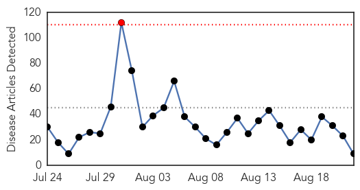
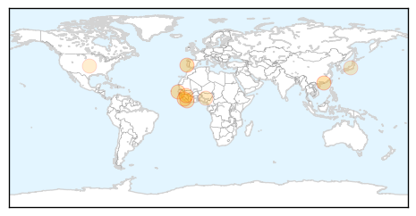

30 Day Trends
Web: 1 alerts, 0 warnings
Twitter: 0 alerts, 0 warnings
Top Articles:
- 0.999
- Ebola vaccines testing starts in Liberia in partnership between Liberian and US governments
- 0.999
- Spaniard has Ebola in 1st infection outside Africa
- 0.987
- The Ebola Hoax Played to Hide a Dark Pharma Agenda
- 0.978
- Exploring fear to regain trust: Getting children to health care in Sierra Leone
- 0.919
- There Are Now Fewer Than 25 Cases of Ebola
- 0.911
- Dr. Craig Spencer gets experimental anti-viral drug Brincidofovir to fight Ebola: officials
- 0.686
- Our dream is to reposition health system — FG
- 0.638
- WHO, UG collaborate to train health workers in disease outbreak response
- 0.548
- Why Medicaid?
Top Tweets:
-
No tweets found for Aug 22, 2015
Web/News Articles
Tweets

Article Locations
Article Confidences